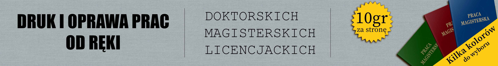
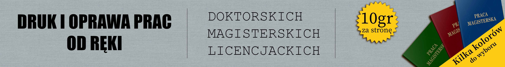

Wizytówki
Druk i ksero A4/A3
Plakaty i banery
Kalendarze
Skanowanie
Oprawianie prac
Druk wielkoformatowy
Bindowanie
Laminowanie
Nagrywanie płyt
Cukierki z logo
Zaproszenia i ulotki
Oferujemy wydruk materiałów reklamowych, plakatów, kalendarzy, druk wielkoformatowy, druk i oprawę prac dyplomowych i wiele wiele innych.
 

Wizytówki
Druk i ksero A4/A3
Plakaty i banery
Kalendarze
Skanowanie
Oprawianie prac
Druk wielkoformatowy
Bindowanie
Laminowanie
Nagrywanie płyt
Cukierki z logo
Zaproszenia i ulotki
Jak przygotować pliki?
Jak przygotować pliki do druku aby bezproblemowo i szybko wcielić Państwa projekt w życie.
sprawdŹ
Po aktualności, informację o nowych promocjach jak i ciekawe pomysły na wydruki zapraszamy na:
Nasz fanpage na facebooku.